Opción A · GIFs de internet
Perros salchicha variados y reales, seleccionados de Tenor por la emoción que transmiten.

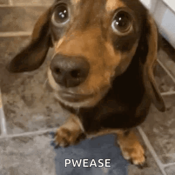
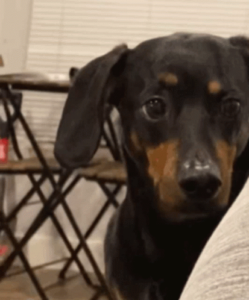
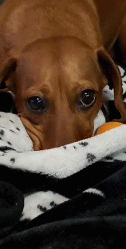
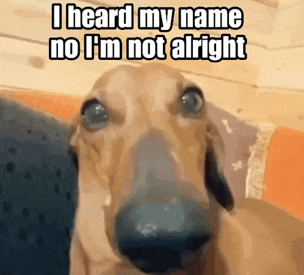
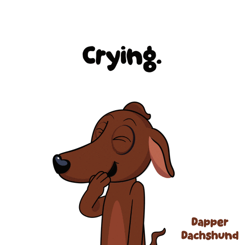
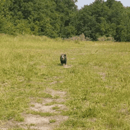
Opción B · Generados con ImageGen
Un único cachorro 3D coherente, creado para esta página y animado en bucles suaves.
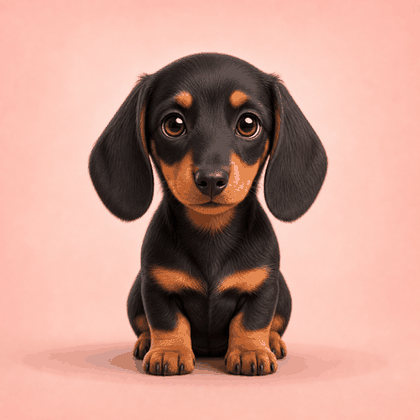
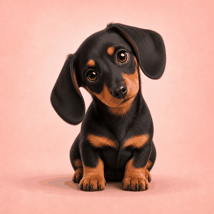
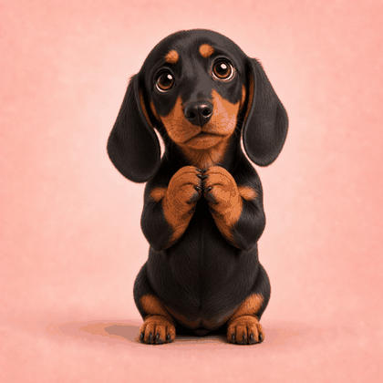
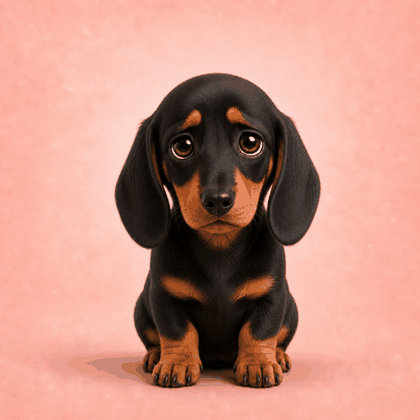
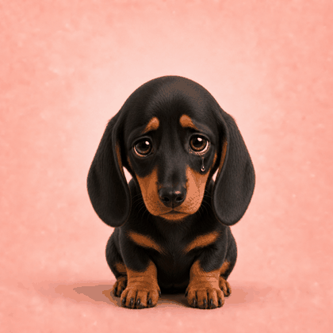
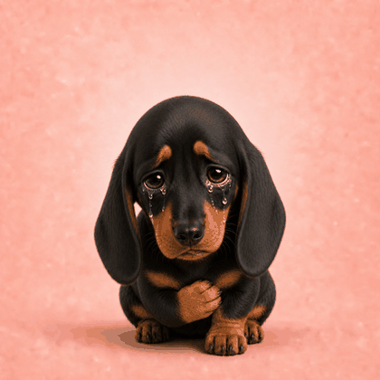
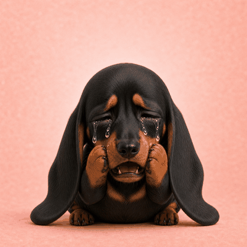
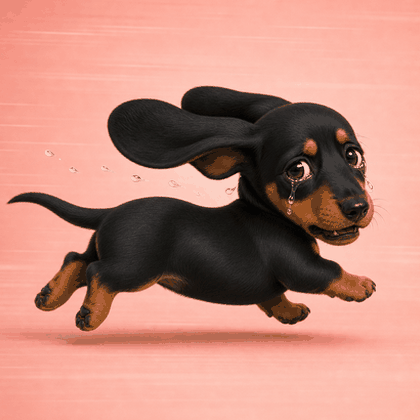
Opción C · ImageGen realista
Basada en tus dos fotos: el mismo salchicha chocolate, con aspecto fotográfico y emociones naturales.